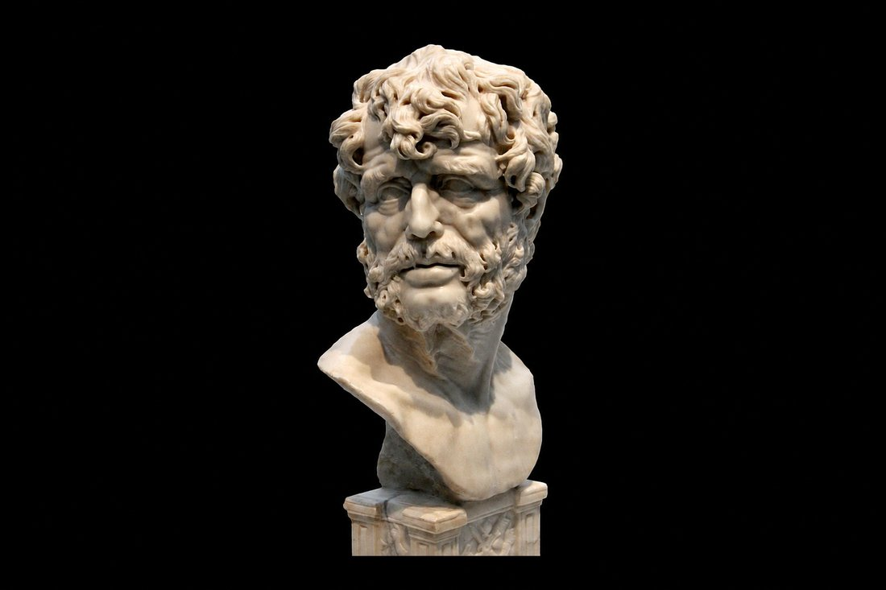

Sénèque écrit De la brièveté de la vie pour convaincre un autre homme de prendre sa retraite, pas pour parler de la sienne. Le destinataire, Paulinus, son beau-père, dirige depuis des années l’approvisionnement en blé de Rome, une charge écrasante. Sénèque le presse de tout quitter pour vivre enfin, tant qu’il en a le temps.
Lui-même n’en fera jamais rien. Précepteur puis conseiller de Néron, l’un des hommes les plus riches de Rome malgré des traités entiers sur le détachement vis-à-vis de l’argent, il reste au centre du pouvoir impérial jusqu’à ce que ce pouvoir finisse, en 65, par exiger sa mort.
Cette tension entre ce qu’il écrit et ce qu’il vit est peut-être ce qui rend Sénèque si lisible aujourd’hui : ce n’est pas un sage retiré du monde, c’est un homme pris dedans, qui essaie malgré tout de penser clairement.
Ce n’est pas le temps qui manque, c’est nous qui le gaspillons
La thèse centrale de De la brièveté de la vie tient en une idée, posée dès les premières lignes : nous ne manquons pas de temps, nous en perdons beaucoup.
« Nous n’avons pas reçu une vie brève, nous l’avons rendue telle. »
Sénèque, De la brièveté de la vie, I
Sénèque ne parle pas d’un manque objectif : une vie humaine, dit-il, suffit largement pour accomplir ce qui compte vraiment, à condition de bien l’employer. Le problème n’est donc pas la durée, c’est l’usage : la dispersion, la procrastination, l’attente d’un moment plus favorable pour enfin vivre.

Les occupati : ceux qui existent sans jamais vivre
Sénèque distingue deux mots qu’on confond trop souvent : exister et vivre. Les occupati, les affairés, sont de son point de vue les plus exposés à cette confusion : pris dans les dossiers, les obligations sociales, la poursuite d’une carrière, ils laissent filer leur vie sans jamais vraiment l’habiter.
« Une grande partie de notre vie s’écoule à mal agir, la plus grande part à ne rien faire, et la vie tout entière à faire autre chose que ce qu’il faudrait. »
Sénèque, De la brièveté de la vie, I
Ce n’est qu’au moment de mourir, remarque Sénèque, que ces hommes-là s’aperçoivent à quel point leur vie a été courte : non pas parce qu’elle l’était réellement, mais parce qu’ils ne l’ont pour ainsi dire jamais vécue, seulement traversée.
Reprendre le temps qu’on donne aux autres
Sénèque ne se contente pas de décrire le problème : il en cherche la cause. Selon lui, nous protégeons farouchement nos biens matériels, mais nous distribuons notre temps sans y penser, à quiconque le demande.
Personne n’accepterait de céder sa maison ou son argent au premier venu ; presque tout le monde accepte pourtant de céder ses heures, ses journées, à des obligations qu’il n’a jamais vraiment choisies. Le temps, parce qu’il est invisible, semble ne rien coûter, jusqu’à ce qu’il n’en reste plus.
Sénèque et les stoïciens
Sénèque appartient à la génération romaine du stoïcisme, trois siècles après que Zénon de Citium a fondé l’école à Athènes et que Chrysippe l’a systématisée. Contrairement à eux, il n’écrit pas de traités théoriques : il préfère la lettre et l’essai, adressés à des proches, pour faire de la philosophie un exercice concret plutôt qu’un système.
C’est cette même discipline qu’on retrouvera, un siècle plus tard, chez Marc Aurèle, qui cite lui aussi Sénèque parmi ses prédécesseurs. Une autre de ses pensées, sur l’accessibilité de la sagesse, est déjà commentée dans l’édition Intracogito n°011, La sagesse.
« La sagesse est offerte à tous, elle est accessible, encore faut-il la désirer. »
Sénèque
Pourquoi le lire aujourd’hui
L’argument de Sénèque n’a pas vieilli : un agenda saturé, des notifications qui réclament l’attention en continu, l’idée qu’on « vivra vraiment » plus tard, une fois tel objectif atteint. Il ne propose pas de méthode de productivité : il propose de se demander, régulièrement, à qui et à quoi on donne vraiment ses heures, et si c’est bien ce qu’on aurait choisi.
En bref
📌 Sénèque (v. 4 av. J.-C. - 65 ap. J.-C.) était un philosophe stoïcien romain, précepteur puis conseiller de l’empereur Néron, qui finira par le contraindre au suicide malgré des années de loyauté.
📌 Dans De la brièveté de la vie, il soutient que nous ne manquons pas de temps, mais que nous le gaspillons : la vie suffit à ce qui compte vraiment, à condition de ne pas la céder sans y penser à des obligations qu’on n’a jamais choisies.
📌 Il distingue exister et vivre : les occupati, pris dans les affaires et les obligations sociales, ne s’aperçoivent de la brièveté de leur vie qu’au moment de mourir, faute de l’avoir vraiment habitée avant.